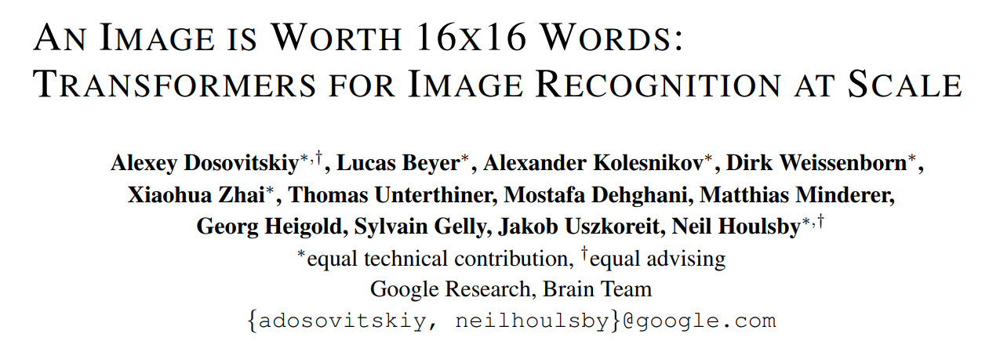
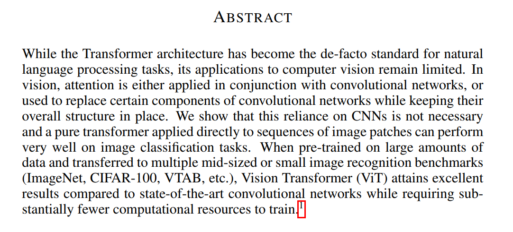
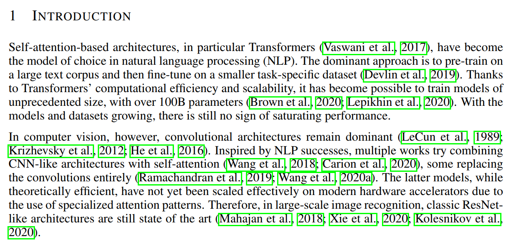
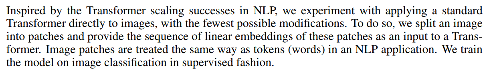
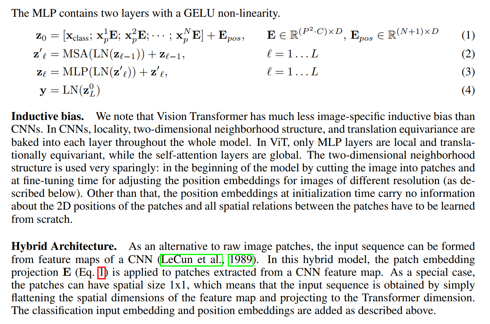
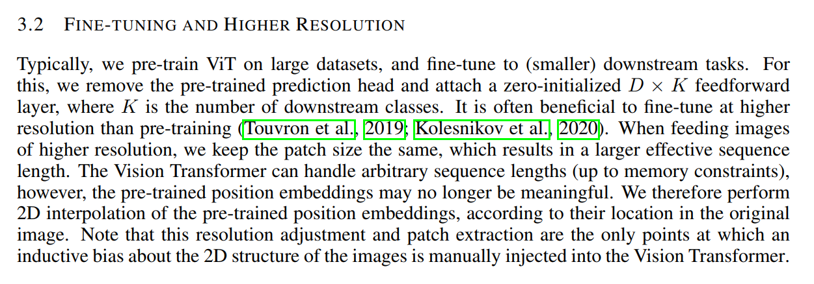
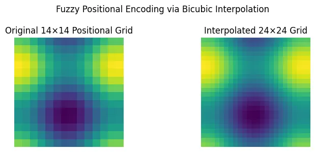
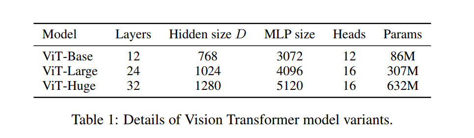
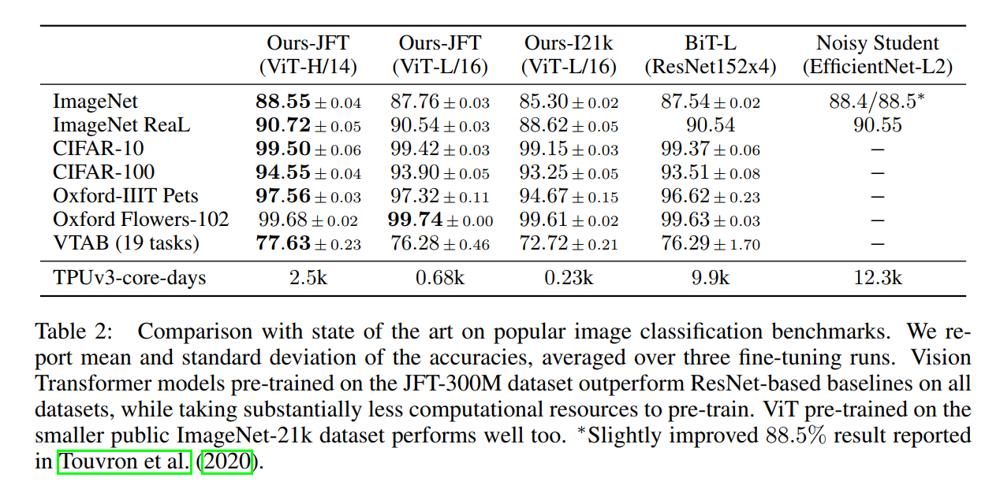
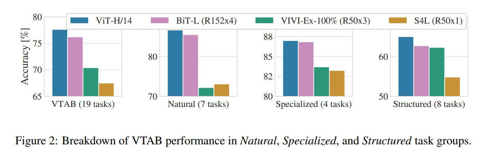

An Image is Worth 16x16 Words: A Deep Dive into the Vision Transformer (ViT)
For years, the worlds of Natural Language Processing (NLP) and Computer Vision (CV) have run on different tracks. NLP was conquered by the Transformer architecture, while CV remained the kingdom of Convolutional Neural Networks (CNNs). In 2020, researchers from Google asked a bold question: what if we could apply a standard Transformer directly to an image? The result was the Vision Transformer (ViT), a model that challenges the necessity of convolutions for vision tasks. In this post, we will break down the influential paper, “An Image Is Worth 16x16 Words,” to understand how this paradigm shift was achieved.

Abstract

The abstract immediately establishes the context and the core argument of the paper. Before this work, the deep learning world was largely split into two domains:
- Natural Language Processing (NLP): Dominated by the Transformer architecture. Transformers, with their powerful
self-attentionmechanism, excel at finding contextual relationships between words in a sequence (e.g., a sentence). - Computer Vision (CV): Dominated by Convolutional Neural Networks (CNNs). CNNs are built on the idea of convolutional filters, small kernels that slide across an image to detect local patterns like edges, corners, and textures. This gives them a built-in “inductive bias” for understanding images.
The authors point out that previous attempts to bring attention mechanisms to vision were cautious. They either attached an attention module to a standard CNN or replaced a few convolutional layers with attention, but kept the overall CNN structure.
The central claim of this paper, stated boldly in the abstract, is that this caution is misplaced. They propose getting rid of the CNN structure entirely. Their revolutionary idea is to reframe a computer vision problem as a natural language processing problem. How? By treating an image not as a grid of pixels, but as a sequence of “words”. The title gives it away: “An Image is Worth 16x16 Words.” They propose a simple, direct approach:
- Split an image into fixed-size patches (e.g., 16x16 pixels).
- Treat this sequence of patches just like a sequence of words in a sentence.
- Feed this sequence directly into a standard Transformer.
The abstract concludes with a teaser of the results, which contains a crucial caveat: this method only works well “when pre-trained on large amounts of data.” When this condition is met, their Vision Transformer (ViT) not only achieves state-of-the-art results but does so with fewer computational resources for training compared to its CNN-based rivals. This sets the stage for the rest of the paper: they have made a bold claim, and now they must prove it.
1. Introduction

The NLP Success Story: Transformers at Scale
“Self-attention-based architectures, in particular Transformers (Vaswani et al., 2017), have become the model of choice in natural language processing (NLP). The dominant approach is to pre-train on a large text corpus and then fine-tune on a smaller task-specific dataset (Devlin et al., 2019).”
The authors begin by reminding us of the revolution that happened in NLP. The key player is the Transformer, an architecture built around a mechanism called self-attention. In simple terms, self-attention allows a model to look at other words in a sentence when processing a single word, weighing their importance to better understand the context. For example, in the sentence “The robot picked up the ball because it was heavy,” self-attention helps the model understand that “it” refers to the “ball,” not the “robot.”
This architecture enabled a powerful two-stage training recipe that has become standard practice:
- Pre-training: A massive Transformer model is trained on an enormous dataset of text (e.g., the entire internet). The goal is not to solve a specific task, but to learn the statistical patterns of language in a self-supervised way. This is like learning a general understanding of a language.
- Fine-tuning: The pre-trained model, now full of general knowledge, is then trained further on a smaller, task-specific dataset (e.g., classifying movie reviews as positive or negative). Because the model already understands language, it can learn this new task with much less data and achieve incredible performance.
The most important point the authors make here is about scalability. Transformers are computationally efficient, allowing researchers to train models with hundreds of billions of parameters (like GPT-3). The bigger the model and the more data it’s pre-trained on, the better it performs, with “no sign of saturating performance.” This sets up a key question: can this recipe for success be transferred to computer vision?
The Computer Vision Kingdom: Convolutional Networks
“In computer vision, however, convolutional architectures remain dominant (LeCun et al., 1989; Krizhevsky et al., 2012; He et al., 2016). … Therefore, in large-scale image recognition, classic ResNet-like architectures are still state of the art…”
Next, the authors pivot to computer vision, which has been dominated by a different kind of architecture: the Convolutional Neural Network (CNN). CNNs have powerful inductive biases for images. An inductive bias is essentially a set of assumptions a model has about the data. For CNNs, these are:
- Locality: The assumption that nearby pixels are strongly related. A small convolutional filter processes a local patch of an image, which is a very effective way to find patterns like edges or textures.
- Translation Equivariance: The assumption that a feature is the same regardless of where it appears in the image. A cat is a cat whether it’s in the top left or bottom right corner. CNNs achieve this by applying the same filter across the entire image.
These built-in assumptions make CNNs very data-efficient. They don’t need to learn these properties from scratch.
Inspired by the success of Transformers in NLP, vision researchers had already tried to incorporate self-attention. These attempts, as the authors note, fell into two categories:
- Hybrid Models: Combining CNNs with self-attention modules.
- Pure Attention Models: Replacing convolutions entirely.
While theoretically promising, the pure attention models had a critical flaw: they relied on “specialized attention patterns” that were not efficient on modern hardware (like GPUs/TPUs). As a result, when it came to large-scale, real-world image recognition, the battle-tested ResNet (a famous CNN architecture) was still king.
This is the gap the paper aims to fill. They are arguing that previous attempts to apply Transformers to vision were perhaps too complex. Their hypothesis is that a standard Transformer, with minimal changes, can succeed where these specialized models failed, provided it’s given enough data to overcome its lack of image-specific inductive biases.
In machine learning, “inductive bias” is a technical term for a simple but powerful idea: the set of assumptions a model makes about the data before it starts learning.
Think of it as giving your model a “head start” or a set of “prior beliefs.” These built-in assumptions guide the model toward a certain type of solution, making it much more efficient at learning from data.
An Analogy: The Two Chefs
Imagine you hire two brilliant but inexperienced chefs and give them the same task: make a classic pizza.
Chef A (The CNN) is given a detailed recipe. The recipe says: “First, make a flat, round dough base. Second, spread tomato sauce on the base. Third, add cheese and toppings. Finally, bake in a hot oven.” This recipe is a strong inductive bias. The chef doesn’t have to waste time figuring out that you shouldn’t bake the dough before adding the sauce. The recipe provides a powerful structure that guides them to a good solution quickly, even with a limited pantry of ingredients (data).
Chef B (The Vision Transformer) is given no recipe. They are simply shown a pile of ingredients (flour, water, tomatoes, cheese, pepperoni) and told, “Make something delicious.” This chef has a very weak inductive bias. They might try boiling the flour or putting the cheese down first. With a small pantry (small dataset), they will likely fail and produce something much worse than Chef A.
But what if you give Chef B a massive, industrial-sized warehouse full of ingredients (a huge dataset) and let them experiment for months (pre-training)? Through millions of trials, they might not only re-discover the recipe for pizza but might also invent entirely new and better dishes that were never in Chef A’s recipe book.
Connecting the Analogy to Vision Models
This is the exact dynamic at play in the ViT paper:
- The CNN is Chef A. Its “recipe” is its architecture, which has two core assumptions baked in:
- Locality: The assumption that nearby pixels are related. A convolutional filter that looks at a small 3x3 or 5x5 patch is the physical embodiment of this bias.
- Translation Equivariance: The assumption that an object is the same regardless of where it appears in the image. Applying the same filter across the entire image enforces this bias. This recipe makes CNNs incredibly data-efficient.
- The Vision Transformer is Chef B. It has almost no recipe.
- The self-attention mechanism is global. It has no built-in knowledge that patch #2 is “closer” to patch #3 than it is to patch #100.
- It must learn the concepts of locality and spatial relationships entirely from scratch by observing patterns in the data. This makes the ViT data-hungry but also incredibly flexible and scalable.
The Grand Trade-off
The central drama of this paper revolves around the trade-off between these two approaches:
| Approach | Strong Inductive Bias (CNN) | Weak Inductive Bias (ViT) |
|---|---|---|
| Pros | Data-Efficient: Learns well on smaller datasets. | Flexible & Scalable: Can learn more complex patterns. |
| Cons | Less Flexible: The built-in assumptions might be limiting. | Data-Hungry: Performs poorly without massive datasets. |
The Core Idea: Images as Sequences of Patches

Here, the authors lay out their elegantly simple and radical proposal. The central problem is that Transformers are designed to process 1D sequences of data (like words in a sentence), while images are inherently 2D grids of pixels. Instead of inventing a complex 2D-aware attention mechanism, the authors take a much more direct route: they change the input, not the model.
The process is as follows:
- Split the Image into Patches: An image is sliced up into a grid of smaller, fixed-size square patches. For example, a standard 224x224 pixel image might be split into 196 patches, each 16x16 pixels. This single step converts the 2D grid into a collection of small image chunks.
- Flatten and Embed the Patches: Each patch is then “flattened” into a single long vector of numbers. For a 16x16 patch with 3 color channels (RGB), this results in a vector of 16 * 16 * 3 = 768 values. This vector is then passed through a standard linear layer, which projects it into a consistent vector size that the Transformer can work with. This output vector is called a patch embedding.
- Create a Sequence: This process results in a sequence of patch embeddings. If we had 196 patches, we now have a sequence of 196 vectors.
This sequence is the crucial final product. The authors explicitly state that “Image patches are treated the same way as tokens (words)”. This is the conceptual breakthrough. The Transformer doesn’t know or care that its input came from an image; it just sees a sequence of vectors, exactly like it would if it were processing a sentence. The first patch is like the first word, the second patch is like the second word, and so on. This simple reframing allows the authors to use the powerful, scalable, and highly optimized standard Transformer architecture “off the shelf”.
The Catch: The Vision Transformer’s Hunger for Data
“When trained on mid-sized datasets such as ImageNet without strong regularization, these models yield modest accuracies of a few percentage points below ResNets of comparable size. This seemingly discouraging outcome may be expected: Transformers lack some of the inductive biases inherent to CNNs, such as translation equivariance and locality, and therefore do not generalize well when trained on insufficient amounts of data.”
The authors now present the results of their first, seemingly discouraging, experiment. They trained their Vision Transformer (ViT) on ImageNet, the most famous benchmark in computer vision, which contains over a million images. The result? It performed worse than a standard ResNet (a popular CNN architecture) of a similar size.
This is a critical moment in the paper. An honest researcher must explain not just successes, but also failures. The authors explain that this result is not surprising. It’s a direct consequence of the trade-off between inductive bias and model flexibility.
- A CNN comes pre-packaged with knowledge about how images work (locality and translation equivariance). This gives it a significant head start, allowing it to learn effectively even on a “mid-sized” dataset like ImageNet.
- A ViT, by contrast, has almost no built-in knowledge about images. It doesn’t inherently know that the pixels in a patch are spatially related, or that a patch in the top-left corner should be treated similarly to a patch in the bottom-right. It has to learn all these spatial relationships from scratch, just by looking at the data.
Because of this, ImageNet, despite its size, is simply not enough data for the ViT to learn these fundamental visual patterns and catch up to the built-in advantages of a CNN.
The Power of Scale: Data Trumps Inductive Bias
“However, the picture changes if the models are trained on larger datasets (14M-300M images). We find that large scale training trumps inductive bias. Our Vision Transformer (ViT) attains excellent results when pre-trained at sufficient scale…”
This is the paper’s main punchline. The weakness of the ViT—its lack of inductive bias—becomes its greatest strength when exposed to an enormous amount of data. The solution to the problem isn’t a more complex model, but simply more data. A lot more.
The authors pre-trained their models on massive internal and public datasets:
- ImageNet-21k: A public dataset with 14 million images and 21,000 classes.
- JFT-300M: A private Google dataset with a staggering 300 million images.
When the ViT is pre-trained on these huge datasets, it finally has enough examples to learn the foundational rules of vision on its own. After this extensive pre-training, the model is then fine-tuned on the smaller benchmark datasets (like the original ImageNet). The results are spectacular. The ViT not only catches up to but “approaches or beats state of the art” CNNs.
The phrase “large scale training trumps inductive bias” is the central thesis of this work. It suggests that with a sufficiently flexible and scalable model (the Transformer), you can achieve superior performance by learning patterns directly from massive amounts of data, rather than relying on hand-crafted architectural assumptions.
3. Method: Building the Vision Transformer
The Philosophy: Keep It Simple
“In model design we follow the original Transformer (Vaswani et al., 2017) as closely as possible. An advantage of this intentionally simple setup is that scalable NLP Transformer architectures – and their efficient implementations – can be used almost out of the box.”
Before detailing the model, the authors state their guiding principle: simplicity. They are not inventing a new, complex “vision-specific” Transformer. Their goal is to make the fewest possible changes to the original, standard Transformer architecture that took the NLP world by storm.
This is a powerful design choice. By sticking to the standard, they can leverage years of research, highly optimized code, and well-understood scaling properties from the NLP community. This decision is a direct response to the “complex engineering” required by previous vision-attention models they critiqued in the related work section.
From Pixels to Patches: The Input Pipeline
“The standard Transformer receives as input a 1D sequence of token embeddings. To handle 2D images, we reshape the image x ∈ RH×W×C into a sequence of flattened 2D patches xp ∈ RN×(P2·C)…”
Here, the authors detail the critical process of converting a 2D image into the 1D sequence a Transformer expects. Let’s break down this pipeline step-by-step with a concrete example.
- Start with an Image Tensor: An image is represented as a tensor of shape
H x W x C, where:His the height of the image (e.g., 224 pixels).Wis the width of the image (e.g., 224 pixels).Cis the number of channels (e.g., 3 for RGB).
- Patching: The image is divided into a grid of smaller, non-overlapping patches. Each patch has a resolution of
P x P(e.g., 16x16 pixels). The total number of patches,N, is calculated as(H * W) / (P * P).- For our example:
N = (224 * 224) / (16 * 16) = 196. So, our image is now a sequence of 196 patches.Nis now the “sequence length” for the Transformer.
- For our example:
- Flattening: Each of these 2D patches is then flattened into a 1D vector. The size of this vector is
P * P * C.- For our example:
16 * 16 * 3 = 768. So, each of our 196 patches is now represented by a vector of 768 numbers.
- For our example:
- Linear Projection (Embedding): The Transformer architecture maintains a constant vector size,
D, throughout its layers. This is often called the “latent dimension” or “embedding dimension”. To get our flattened patches into this required size, we pass them through a standard, trainable linear projection layer. This layer learns to map the raw patch data (our 768-dimensional vector) into the model’s working dimensionD(e.g., 768 for ViT-Base).- The output of this step is what the authors call the patch embeddings. This is a sequence of
Nvectors, each of sizeD.
- The output of this step is what the authors call the patch embeddings. This is a sequence of
This entire process is the direct visual analog of how text is handled in NLP. In NLP, a sentence is broken into words (tokens), and then an embedding layer maps each word to a vector of size D. Here, the image is broken into patches, and a linear projection layer maps each patch to a vector of size D. This elegant pipeline is the key that unlocks the ability to use a standard Transformer for vision.
Figure 1: The Vision Transformer Architecture at a Glance
The authors provide a fantastic diagram that visualizes the entire process. Let’s walk through the flow of data from left to right, corresponding to the model’s forward pass.
{kind=link}
The Main Architecture (Left Side of Figure)
This diagram shows the end-to-end pipeline, which we can break down into five key steps:
Image to Patches: At the very bottom, we see the input image being split into a grid of patches. This is the first step we discussed in the method section.
Patches to Embeddings: The patches are flattened and then passed through the “Linear Projection of Flattened Patches” layer. This produces our sequence of patch embeddings, shown as the numbered vectors (1, 2, 3, …).
Prepending the [class] Token: This is a crucial and non-intuitive step borrowed directly from the famous BERT model in NLP. Notice the extra vector at the beginning of the sequence, labeled
0*. This is a special, learnable vector that is added to the sequence of patch embeddings. It’s often called the[class]token or[CLS]token. Its purpose is to serve as a kind of “representation aggregator.” The self-attention mechanism in the Transformer will allow this token to exchange information with all the image patch tokens. The idea is that by the end, the final output vector corresponding to this special token will contain a summary of the entire image, which is perfect for a classification task.Adding Positional Embeddings: Before the sequence of tokens is fed into the main encoder, a positional embedding is added to each one. This is absolutely critical. A standard Transformer is “permutation-invariant,” meaning it treats a sequence as a simple bag of tokens with no inherent order. Without positional embeddings, the model would have no idea where each patch came from in the original image. By adding a learnable vector that represents the position (e.g., token 1 is at position 1, token 2 at position 2, etc.), we give the model the spatial information it needs to understand the image’s structure.
The Transformer Encoder: The prepared sequence of vectors (patch embeddings +
[CLS]token + positional embeddings) is then fed into the core of the model: the Transformer Encoder. This is the large gray block where the main computation happens.The MLP Head: After the sequence is processed by the encoder, we discard all the outputs for the image patches. We only take the final, transformed vector that corresponds to our special
[CLS]token. This single vector is then fed into a standard Multi-Layer Perceptron (MLP), which acts as the classification “head.” This head maps the learned representation to the final class probabilities (e.g., “Bird”, “Ball”, “Car”).
It might seem strange that after all the complex processing in the Transformer Encoder, we simply throw away the output vectors for every single image patch and only use the one corresponding to the [CLS] token. Why do we do this? And what information are we discarding?
What do the other tokens represent?
After passing through the multiple layers of self-attention, each of the original patch embeddings has been transformed into a new, “contextualized” embedding. The output vector for patch #5, for example, no longer just represents the content of that specific patch. It now contains a rich representation of patch #5 in the context of the entire image. It has gathered information from the sky, the ground, and every other patch, weighted by relevance, to enrich its own meaning. You can think of these output patch vectors as highly informative, context-aware feature representations for each local region of the image.
So why discard them for classification?
The primary reason is to create a simple and fixed-size representation for the entire image that can be easily fed into a classification head.
The Aggregation Problem: For an image classification task, we need a single, holistic prediction. This requires aggregating information from all the patches into one representative vector. How should we do this? We could try global average pooling—simply averaging all the output patch vectors. While this can work, it treats every patch region as equally important for the final decision.
The [CLS] Token Solution: The
[CLS]token provides a more flexible and powerful alternative. By introducing a dedicated “summary” token from the beginning, we are giving the model a specific place to accumulate the most important information for the classification task. The self-attention mechanism allows the[CLS]token to act like a query, asking each patch: “What information do you have that is relevant for classifying this image as a whole?” The model learns the best way to perform this aggregation during training, rather than being forced to use a simple average. It can learn to pay more attention to the patches that make up the main object and less to the background, for instance.
In short, we discard the individual patch outputs for the classification task because the [CLS] token has already learned to do the job of summarizing them for us. For other, more granular tasks like image segmentation (where you need a prediction for every pixel), these output patch vectors would be incredibly valuable and would not be discarded. But for the single-label classification goal of this paper, the [CLS] token provides a clean and effective mechanism.
Inside the Transformer Encoder (Right Side of Figure)
The diagram on the right is a zoom-in on the internal structure of the Transformer Encoder. The encoder is not a single block, but a stack of L identical layers. Each layer consists of two main sub-blocks:
Multi-Head Self-Attention (MSA): This is the heart of the Transformer. In this block, every token in the sequence looks at every other token to compute attention scores. This allows information to be mixed and propagated across the entire image, even in the very first layer. A patch representing the sky can “talk” to a patch representing a wheel, allowing the model to learn global relationships. “Multi-head” simply means that this process is done in parallel with different learned transformations, allowing the model to capture different types of relationships simultaneously.
Multi-Layer Perceptron (MLP): The second block is a standard feed-forward neural network. Unlike the MSA block, which mixes information between tokens, the MLP block processes each token’s representation independently. It acts as a rich feature transformation for each patch.
Notice the Norm layers (Layer Normalization) before each block and the residual connections (the arrows that skip over the blocks). These are standard components in deep learning that are crucial for stabilizing the training of very deep networks (i.e., when L is large).
Perfect. This section puts the concepts from the diagram into words and adds some important details. Let’s break it down.
The Role of the [CLS] Token and Positional Embeddings
“Similar to BERT’s [class] token, we prepend a learnable embedding to the sequence of embedded patches… whose state at the output of the Transformer encoder … serves as the image representation y…”
Here, the authors formally describe the purpose of the special [CLS] token we saw in the diagram. This is a clever trick borrowed from NLP. Instead of trying to aggregate information from all the patch tokens at the end (for example, by averaging them), they add a dedicated slot to the sequence from the very beginning. The Transformer’s self-attention layers are then responsible for populating this slot with a rich summary of the entire image. After passing through all L layers of the encoder, the output vector corresponding to this initial [CLS] token is considered the final representation of the image. This single vector is then passed to a simple MLP head for the final classification.
“Position embeddings are added to the patch embeddings to retain positional information. We use standard learnable 1D position embeddings, since we have not observed significant performance gains from using more advanced 2D-aware position embeddings…”
This paragraph addresses a critical aspect of the design. By flattening the image into a sequence of patches, we lose all explicit 2D spatial information. The model doesn’t know that patch #1 is to the left of patch #2, or that patch #15 is directly below patch #1. To solve this, position embeddings are added to the patch embeddings. These are simply learnable vectors, where each vector corresponds to a specific position in the sequence (e.g., a unique vector for position 1, another for position 2, and so on). The model learns the meaning of these positions during training.
The authors make a very interesting point here: they tried more complex, “2D-aware” position embeddings that explicitly encode the row and column of each patch. Surprisingly, these did not provide a significant performance boost over the simple 1D embeddings. This suggests that the Transformer is powerful enough to learn the 2D spatial relationships between patches on its own, just from the 1D positional information, as long as it’s given enough data. This finding reinforces their overall philosophy of keeping the model as simple and standard as possible.
The Transformer Encoder Block
“The Transformer encoder … consists of alternating layers of multiheaded self-attention (MSA) … and MLP blocks … Layernorm (LN) is applied before every block, and residual connections after every block…”
This final part just re-iterates the structure of the Transformer encoder shown in the diagram. It’s a stack of identical layers, each containing two main components: Multi-Head Self-Attention (MSA) and a Multi-Layer Perceptron (MLP). They also specify the exact arrangement of the supporting components: Layer Normalization is applied before each block (a “pre-norm” configuration), and residual connections are used after each block. This specific arrangement is a small but important detail that is known to help stabilize training in very deep Transformers.
Model Equations and the Inductive Bias Trade-off
The ViT in Four Equations

Let’s quickly translate these equations into the concepts we’ve already covered:
- Equation 1: This is the complete input preparation step. It shows the creation of the sequence
z_0by concatenating the learnable[CLS]token (x_class) with the projected patch embeddings (x_p * E) and then adding the positional embeddings (E_pos). - Equations 2 & 3: These two equations define a single layer of the Transformer encoder. Equation 2 shows the Multi-Head Self-Attention (MSA) block, complete with its pre-LayerNorm (LN) and residual connection (
+ z_{l-1}). Equation 3 shows the subsequent MLP block, which also has a pre-LayerNorm and a residual connection. This pair of operations is repeatedLtimes. - Equation 4: This describes how to get the final output. It takes the 0-th element (the
[CLS]token) from the output of the final layerL, passes it through one last LayerNorm, and the result,y, is the final image representation that is fed to the classification head.
Equation 1: Assembling Your Ingredients
z0 = [xclass; xp1E; xp2E; … ; xpNE] + Epos
Intuitive Meaning: “Prepare the input sequence.”
This equation is all about getting your input ready for the main event. It’s like a chef doing mise en place (getting all ingredients prepped before cooking).
- Chop the Image: First, you take your image and chop it into
Nlittle patches. - Turn Patches into “Words”: Each patch is a bunch of pixels. You need to turn it into a single, standardized vector that your model understands. That’s what
x_p * Edoes. It’s a “linear projection” that acts like a dictionary, turning a raw patch into a meaningful vector (a “patch embedding”). You do this for allNpatches. - Add a “Blank Page”: At the very beginning of your sequence of patch-words, you add a special, extra “word” called the
[CLS]token (x_class). Think of this as a blank page at the front of a notebook. The model will use this page to write its summary of the entire image later on. - Stamp Each Word with its Location: Now you have a sequence of words:
[CLS], patch1, patch2, .... But the model doesn’t know their order. To fix this, you add a “location stamp” to each word. This is the positional embedding (E_pos). It’s like adding “1st,” “2nd,” “3rd,” etc., to your words so the model knows their original positions.
The final result, z_0, is your fully prepared input sequence, ready to be processed.
Equations 2 & 3: The Processing Machine
z’l = MSA(LN(zl-1)) + zl-1
zl = MLP(LN(z’l)) + z’l
Intuitive Meaning: “Process the sequence through one layer of the Transformer.”
These two equations describe one round of processing. The Transformer is made of L identical layers stacked on top of each other, and this is what happens in each one.
Equation 2 (The Communication Step): This is the Multi-Head Self-Attention (MSA) part. Imagine all your words (the
[CLS]token and all the patch-words) are in a room together. In this step, every word gets to look at every other word and decide which ones are most important to it. A “sky” patch might pay attention to a “cloud” patch. The[CLS]token (our summary page) looks at all the patches to start gathering information. After this step, each word’s vector is updated with context from all the other words. This is the “global communication” step.Equation 3 (The Thinking Step): This is the MLP part. After all the words have talked to each other, they each need to “think” about what they’ve learned. The MLP is like a small brain for each individual word. It takes the updated vector for that word and does some complex processing on it independently. It finds deeper patterns and features within that word’s new, contextualized representation.
The LN (LayerNorm) and the + z (residual connection) parts are just engineering tricks to make sure the process is stable and the model learns effectively, layer after layer. You repeat this two-step process (communicate, then think) for all L layers.
Equation 4: The Final Answer
y = LN(zL0)
Intuitive Meaning: “Read the summary page.”
After the input has gone through all L layers of communication and thinking, the process is done. Now you need the final answer for the whole image.
Remember that blank page, the [CLS] token we added at the beginning? Through all L layers, it has been gathering information from all the image patches, constantly updating its own vector to become the best possible summary of the image for the task of classification.
This equation says:
- Go to the final output of the last layer (
z_L). - Ignore all the vectors for the image patches.
- Just take the very first vector (
z_L^0), the one that corresponds to your[CLS]token.
This single vector, y, is the model’s final, rich representation of the entire image. You can now pass this one vector to a simple classifier to get your final prediction: “This is an image of a cat.”
Inductive Bias: The ViT’s Greatest Weakness and Strength
“We note that Vision Transformer has much less image-specific inductive bias than CNNs. In CNNs, locality, two-dimensional neighborhood structure, and translation equivariance are baked into each layer throughout the whole model. In ViT, only MLP layers are local and translationally equivariant, while the self-attention layers are global.”
This is one of the most important conceptual paragraphs in the entire paper. The authors explicitly state the fundamental difference between a ViT and a CNN.
- An inductive bias is a set of assumptions a model makes about the data it will process. These assumptions give the model a “head start” on learning.
- CNNs have strong inductive biases for images. Their core operation, the convolution, assumes that local groups of pixels are important (locality) and that the same features can appear anywhere in the image (translation equivariance). These assumptions are hard-coded into the architecture and are present in every single layer.
- ViTs, on the other hand, have very weak inductive biases. The self-attention mechanism is global; it doesn’t inherently assume that patch #2 is more related to patch #3 than it is to patch #100. The only truly local part of a ViT is the MLP block, which processes each patch’s representation independently.
The only places the ViT is given any information about the 2D structure of the image are:
- At the very beginning, when the image is cut into patches.
- During fine-tuning, when the position embeddings might be adjusted for different image resolutions.
Beyond that, the model starts as a blank slate. It must learn the concept of locality and all other spatial relationships between the patches entirely from the data. This is why ViT needs so much data to perform well: it has to learn the fundamental rules of vision that are given to a CNN for free.
The Hybrid Alternative: A CNN Backbone
“As an alternative to raw image patches, the input sequence can be formed from feature maps of a CNN… In this hybrid model, the patch embedding projection E (Eq. 1) is applied to patches extracted from a CNN feature map.”
Recognizing the trade-off with inductive bias, the authors propose a Hybrid Architecture as a middle ground. This is an important experimental control to test their hypotheses. The idea is to combine the strengths of both architectures:
- First, an image is fed into a standard CNN (like a ResNet).
- Instead of taking the final class prediction, we stop partway through the network and extract the intermediate feature maps. These are no longer raw pixels but representations of higher-level features like edges, textures, and object parts.
- This 2D feature map is then treated as the “image.” It is broken into “patches” (which could be as small as 1x1, meaning each vector in the feature map becomes a token), flattened into a sequence, and fed into the Transformer.
The motivation is clear: let the CNN do what it does best (efficiently learn a hierarchy of local features thanks to its strong inductive bias), and then let the Transformer do what it does best (use its global self-attention mechanism to find complex relationships between these high-level features). This provides a powerful baseline to compare against the pure Transformer approach.
3.2 Fine-tuning and Higher Resolution

Adapting the Model for Downstream Tasks
“Typically, we pre-train ViT on large datasets, and fine-tune to (smaller) downstream tasks. For this, we remove the pre-trained prediction head and attach a zero-initialized D × K feedforward layer, where K is the number of downstream classes.”
This describes the standard procedure for transfer learning. Once the model has been pre-trained on a massive dataset like JFT-300M (which has 18,000 classes), its general knowledge is locked into the main body of the Transformer. To adapt it to a new task, like classifying CIFAR-100 (which has only 100 classes), we perform a simple surgery:
- Remove the Head: The original classification head (the final MLP layer) that was trained to predict 18,000 classes is chopped off and discarded.
- Attach a New Head: A brand new, randomly initialized linear layer is attached in its place. This new layer takes the
D-dimensional output from the[CLS]token and projects it toKoutputs, whereKis the number of classes in our new task (e.g., 100 for CIFAR-100). “Zero-initialized” is a small implementation detail that can sometimes help stabilize the beginning of the fine-tuning process. - Fine-tune: The entire model (the Transformer body and the new head) is then trained on the new dataset, but typically with a much lower learning rate. This gently adjusts the pre-trained weights to specialize them for the new task without catastrophically forgetting the powerful general features learned during pre-training.
The Challenge and Opportunity of Higher Resolution
“It is often beneficial to fine-tune at higher resolution than pre-training… When feeding images of higher resolution, we keep the patch size the same, which results in a larger effective sequence length. The Vision Transformer can handle arbitrary sequence lengths … however, the pre-trained position embeddings may no longer be meaningful.”
This is a clever trick used to boost performance, but it introduces a fascinating technical challenge unique to the ViT. It’s common practice in computer vision to pre-train on, say, 224x224 images and then fine-tune on higher-resolution 384x384 images. This provides the model with more detail to work with, often leading to better accuracy.
For a ViT, this has a direct consequence:
- A 224x224 image with 16x16 patches creates a sequence of
14x14 = 196patches. - A 384x384 image with the same 16x16 patches creates a sequence of
24x24 = 576patches.
The core Transformer architecture is flexible and can handle this longer sequence. However, there’s a problem: the model was pre-trained with position embeddings that only accounted for 196 positions. What should the model do with the new patch positions from 197 to 576?
“We therefore perform 2D interpolation of the pre-trained position embeddings, according to their location in the original image.”
The authors’ solution is elegant. They treat the learned positional embeddings not as a simple list, but as a representation of a 14x14 grid. They then use standard 2D interpolation techniques to “stretch” this learned 14x14 grid into a new 24x24 grid. This allows them to intelligently initialize the positional embeddings for the new, larger image size, preserving the spatial understanding the model learned during pre-training.
Finally, the authors make a sharp observation: this interpolation step is one of the only places in the entire model where an explicit “inductive bias about the 2D structure of the images is manually injected.” It’s a small but necessary concession to the 2D nature of images, required to make this high-resolution fine-tuning strategy work.
That’s a fantastic question, and it’s a subtle but really clever part of the paper. Let’s clarify: they aren’t stretching the image patches themselves (those stay fixed at 16x16 pixels). Instead, they are stretching the grid of positional embeddings—the learned vectors that tell the model where each patch came from.
The best analogy is creating a weather map.
Step 1: The Original, Sparse Weather Map
- Imagine during pre-training (on 224x224 images), you have weather stations in a
14x14grid of cities. You have exactly196stations. - Each station has a very detailed weather report (this is the 768-dimensional positional embedding vector).
- During training, the model doesn’t just learn the report for each city; it learns the relationships between them. It learns that the weather in “City (1,1)” is similar to “City (1,2)” because they are neighbors. It learns the pattern of how the weather changes as you go from north to south or west to east across the map. This is the learned “spatial understanding.”
Step 2: The New, High-Definition Map
- Now, for fine-tuning, you switch to a much larger map (representing the 384x384 image). You want to create a high-definition weather map with a
24x24grid, which requires576weather data points. - The Problem: You only have data from your original 196 stations. How do you intelligently guess the weather for the 380 new locations on your hi-def map?
Step 3: The Interpolation Solution (The “Stretching”)
You use interpolation. For any new point on your 24x24 map, you do the following:
Find its Location on the Old Map: You find where this new point would have been on the original, sparse
14x14map. It won’t be exactly on a station; it will be in a square between four of your original stations.Perform a Weighted Average: To estimate the weather for this new point, you look at the detailed weather reports (the embedding vectors) of the four surrounding stations. You then calculate a weighted average of these four reports.
The Weights are Key: The average is weighted by proximity.
- If your new point is very, very close to the “top-left” station, its weather report will be almost identical to the top-left station’s report.
- If your new point is dead center in the middle of all four stations, its weather report will be an equal mix (a simple average) of all four reports.
This process is repeated for every one of the 576 points on the new 24x24 grid. The result is a smooth, complete, high-definition map where the weather patterns logically transition between the locations of the original stations.

Image source Understanding the Vision Transformer That Works with Any Resolution by Rayan Yassminh
Why is this “Intelligent”?
This method preserves the crucial spatial relationships the model already learned. The concepts of “up,” “down,” “left,” “right,” and “center” that were learned on the 14x14 map are now smoothly scaled up to the 24x24 map.
This gives the model a fantastic starting point for fine-tuning. Instead of having to re-learn the spatial layout of the image from scratch, it starts with an intelligently “resized” map of positions and only needs to make minor adjustments. It’s vastly more efficient than initializing the new positions randomly.
4. Experiments
Putting the Theory to the Test
“We evaluate the representation learning capabilities of ResNet, Vision Transformer (ViT), and the hybrid. To understand the data requirements of each model, we pre-train on datasets of varying size and evaluate many benchmark tasks. When considering the computational cost of pre-training the model, ViT performs very favourably…”
Having detailed their model, the authors now lay out the roadmap for their experimental validation. The goal is not just to show that ViT works, but to rigorously test the core hypotheses of the paper. Their experiments are designed to answer three key questions:
- Architecture: How does a pure Vision Transformer stack up against a state-of-the-art CNN (ResNet) and the proposed Hybrid model?
- Scale: Is it true that “data trumps inductive bias”? How does the performance of ViT change as the size of the pre-training dataset grows from medium (ImageNet) to massive (JFT-300M)?
- Efficiency: How does the ViT compare in terms of computational cost? Does it achieve better performance with less training compute?
This comprehensive approach ensures that their claims are tested from multiple angles.
4.1 Setup
The Datasets: A Three-Tiered Approach to Pre-training
“To explore model scalability, we use the ILSVRC-2012 ImageNet dataset with 1k classes and 1.3M images… its superset ImageNet-21k with 21k classes and 14M images… and JFT with 18k classes and 303M high-resolution images.”
To test the effect of scale, the authors use a “good, better, best” strategy for their pre-training data:
- ImageNet (1.3M images): The standard, ubiquitous benchmark. This serves as their “mid-sized” baseline.
- ImageNet-21k (14M images): A public dataset that is an order of magnitude larger than the standard ImageNet. This is their “large” dataset.
- JFT-300M (303M images): A massive, private dataset. At over 200 times the size of standard ImageNet, this is the “extra-large” dataset that will truly test the limits of the model and its ability to learn from data alone.
After pre-training on one of these three datasets, the models are then fine-tuned and evaluated on a suite of standard “downstream” tasks. These include the original ImageNet, CIFAR-10/100, and datasets for classifying pets and flowers. Using a diverse set of tasks is crucial for testing the generality of the learned representations. A truly powerful pre-trained model should be a good starting point for solving many different kinds of visual problems.
Ensuring a Fair Fight
“We de-duplicate the pre-training datasets w.r.t. the test sets of the downstream tasks following Kolesnikov et al. (2020)… For these datasets, pre-processing follows Kolesnikov et al. (2020).”
This is a subtle but critically important detail for scientific rigor.
De-duplication: The authors ensure that no images from the final test sets appear in their massive pre-training datasets. This prevents the model from “cheating” by having seen the answers to the test during its training. It’s the academic equivalent of making sure a student studying for a final exam doesn’t have a copy of the exam questions in their study materials.
Identical Pre-processing: They use the exact same data pre-processing pipeline as the “Big Transfer” (BiT) paper, which is their primary CNN-based competitor. This ensures an apples-to-apples comparison, where any performance difference can be attributed to the model architecture (ViT vs. ResNet), not to a difference in how the input data was prepared.
The Competitors: ViT, BiT, and Hybrid Models
ViT Model Variants
“We base ViT configurations on those used for BERT … The”Base” and “Large” models are directly adopted from BERT and we add the larger “Huge” model. In what follows we use brief notation to indicate the model size and the input patch size: for instance, ViT-L/16 means the “Large” variant with 16 × 16 input patch size.”
Again, the authors emphasize their strategy of borrowing directly from NLP. Instead of designing new model sizes from scratch, they adopt the well-established configurations from BERT, a famous Transformer model for language. This gives them three primary sizes to experiment with:
- ViT-Base: A moderately sized model.
- ViT-Large: A significantly deeper and wider model.
- ViT-Huge: An even larger model, created to push the limits of performance.

They also introduce a simple and important naming convention: Model-Size/Patch-Size. So, ViT-L/16 refers to the “Large” ViT model using a patch size of 16x16 pixels.
The authors make a critical point about the trade-off between patch size and computational cost: “…the Transformer’s sequence length is inversely proportional to the square of the patch size, thus models with smaller patch size are computationally more expensive.” Let’s break this down:
- ViT-L/32: Using a 32x32 patch size on a 224x224 image creates a
(224/32)^2 = 7x7 = 49patch sequence. This is a very short sequence, making the model fast. - ViT-L/16: Using a 16x16 patch size creates a
(224/16)^2 = 14x14 = 196patch sequence. This longer sequence requires more computation in the self-attention layers. - ViT-L/14: Using a 14x14 patch size creates a
(224/14)^2 = 16x16 = 256patch sequence. This is even more computationally expensive.
This trade-off is central to the ViT’s design. A smaller patch size gives the model a more fine-grained view of the image but comes at a significant computational cost.
The CNN Baseline: Big Transfer (BiT)
“For the baseline CNNs, we use ResNet … but replace the Batch Normalization layers with Group Normalization … and used standardized convolutions … we denote the modified model”ResNet (BiT)“.”
To ensure a fair and powerful comparison, the authors don’t just use a standard, off-the-shelf ResNet. Instead, they use the state-of-the-art ResNet variant from the “Big Transfer” (BiT) paper. This version includes modern improvements that make ResNets perform better, especially in the transfer learning setting:
- Group Normalization instead of Batch Normalization: This is a technical detail, but Group Normalization tends to work better with the small batch sizes often used during fine-tuning.
- Standardized Convolutions: Another modification that helps stabilize training and improve performance.
By using this souped-up ResNet as their baseline, the authors are setting a very high bar. If ViT can beat BiT, it’s beating one of the strongest CNN-based models available at the time.
The Hybrid Model Details
“For the hybrids, we feed the intermediate feature maps into ViT with patch size of one ‘pixel’.”
Finally, they provide more detail on the Hybrid models. A ResNet is used as a feature extractor. The feature maps produced by the ResNet are then fed into the ViT. They use a “patch size” of one, which simply means that each spatial location in the feature map becomes a single token in the sequence for the Transformer. This is the most direct way to convert a feature map into a sequence. They also experiment with a variation that creates a 4x longer sequence to give the Transformer more information to work with, at the cost of more computation.
Training, Fine-tuning, and Evaluation Metrics
Pre-training: Forging the Generalist
“We train all models, including ResNets, using Adam … with β₁ = 0.9, β₂ = 0.999, a batch size of 4096 and apply a high weight decay of 0.1, which we found to be useful for transfer of all models… Adam works slightly better than SGD for ResNets in our setting).”
This paragraph details the recipe for the large-scale pre-training phase.
- Optimizer: They use the Adam optimizer. This is the standard choice for training Transformers, but it’s an interesting choice for ResNets, which are more commonly trained with SGD (Stochastic Gradient Descent). The authors explicitly note that they found Adam to work slightly better for their ResNet baselines in this specific transfer learning setup. This is a mark of careful research; they optimized the training process for their competitors to ensure the comparison was as fair as possible.
- Batch Size: A batch size of 4096 is enormous. This is a key ingredient for stable training on massive datasets and is only feasible on large-scale hardware like TPUs.
- Regularization: They use a very high weight decay of 0.1. Weight decay is a regularization technique that prevents the model’s weights from growing too large, which helps prevent overfitting. A high value like this indicates that strong regularization is necessary to ensure the features learned on the massive pre-training dataset are general enough to be useful for other tasks.
Fine-tuning: Creating the Specialist
“For fine-tuning we use SGD with momentum, batch size 512, for all models… For ImageNet results in Table 2, we fine-tuned at higher resolution: 512 for ViT-L/16 and 518 for ViT-H/14, and also used Polyak & Juditsky averaging…”
When specializing the model for a downstream task, the recipe changes significantly.
- Optimizer Switch: They switch to SGD with momentum for fine-tuning. This is a common and effective practice. While Adam is excellent for converging quickly during pre-training, many practitioners find that the simpler SGD can find a better, more robust minimum during the delicate fine-tuning phase. It’s like using a power tool for the rough construction and a hand tool for the finishing details.
- Polyak-Juditsky Averaging: This is a technique, also known as model weight averaging, used to squeeze out a final bit of performance. Instead of taking the model’s weights from the very last training step, this method calculates an exponential moving average of the model’s weights over the last several steps. This helps to smooth out the noise from the optimization process and often results in a final model that is more stable and generalizes slightly better.
Measuring Success: Fine-tuning vs. Few-shot Accuracy
“We report results on downstream datasets either through few-shot or fine-tuning accuracy… Though we mainly focus on fine-tuning performance, we sometimes use linear few-shot accuracies for fast on-the-fly evaluation where fine-tuning would be too costly.”
The authors use two distinct methods to evaluate how good the learned representations are:
Fine-tuning Accuracy (The Main Metric): This is the gold standard. The entire pre-trained model is trained end-to-end on the new task (with a new classification head). This measures the model’s maximum performance potential on that task. It answers the question: “After full specialization, how good can this model be?”
Linear Few-shot Accuracy (The Quick Check): This is a much faster, lower-cost evaluation. Here, the main body of the pre-trained model is frozen—its weights are not updated. Only a single linear layer placed on top of the frozen features is trained, and it’s trained on very little data (a “few shots” per class). This metric doesn’t measure the model’s ultimate performance, but it’s an excellent proxy for the quality of the pre-trained features. If the features are good, even a simple linear classifier should be able to separate the classes well. The authors use this for quick, intermediate evaluations where running a full fine-tuning cycle would be too time-consuming.
4.2 Comparison to State of the Art
The Main Event: Beating the Best
“We first compare our largest models – ViT-H/14 and ViT-L/16 – to state-of-the-art CNNs from the literature. The first comparison point is Big Transfer (BiT), which performs supervised transfer learning with large ResNets. The second is Noisy Student, which is a large EfficientNet trained using semi-supervised learning… All models were trained on TPUv3 hardware, and we report the number of TPUv3-core-days taken to pre-train each of them…”
The authors set up a high-stakes comparison against two formidable opponents:
- Big Transfer (BiT): The best supervised pre-training model at the time. This is a heavily optimized ResNet, representing the pinnacle of the classical CNN approach. Beating BiT means proving that a Transformer can be a better architecture for supervised learning in vision.
- Noisy Student: The overall state-of-the-art model on ImageNet at the time. It uses a different CNN architecture (EfficientNet) and a complex semi-supervised training strategy, which leverages a huge amount of unlabeled data. Matching Noisy Student means ViT is competitive with the absolute best, regardless of training methodology.
Crucially, the authors don’t just compare accuracy; they also compare the total computational cost required for pre-training, measured in TPUv3-core-days. This metric is essentially (number of TPU cores used) x (number of days trained). A lower number is better, signifying greater efficiency.

The results presented in Table 2 are the paper’s primary evidence, and they are striking. Let’s break down the key takeaways:
ViT-L/16 vs. BiT-L (Apples-to-Apples): This is the most direct comparison. Both are “Large” models pre-trained on the same JFT-300M dataset. The results show that ViT-L/16 outperforms the best ResNet (BiT-L) on every single benchmark. This is a major victory. But the truly staggering result is the computational cost: ViT-L/16 required only 680 TPU-core-days, whereas BiT-L required 9,900. The Vision Transformer achieves superior performance while using roughly 14 times less compute.
The Power of Scale (ViT-H/14): The larger ViT-H/14 model further improves performance across the board, achieving a remarkable 88.55% on ImageNet. This demonstrates that, as hypothesized, the Transformer architecture continues to benefit from increased scale. Even this huge model was significantly cheaper to train (2,500 TPU-core-days) than both BiT-L (9.9k) and Noisy Student (12.3k).
Matching the Overall SOTA: ViT-H/14’s 88.55% on ImageNet directly matches the performance of the complex Noisy Student model. This proves that a pure Transformer, trained with a straightforward supervised learning approach, can reach the absolute peak of image classification performance, without needing complex semi-supervised techniques.
Strong Public Model: The authors also report results for ViT-L/16 pre-trained on the smaller, public ImageNet-21k dataset. Even this model performs exceptionally well, often outperforming the BiT-L model that was trained on the much larger JFT-300M dataset, and it does so at a tiny fraction of the computational cost (230 vs 9,900 TPU-core-days). This showed the approach was viable even without access to Google’s massive private dataset.
A Deeper Look: Performance on Diverse Tasks (VTAB)

To further test the generality of the learned features, the authors evaluate their models on the Visual Task Adaptation Benchmark (VTAB). This benchmark consists of 19 diverse tasks, grouped into three categories:
- Natural: Standard image classification tasks (pets, flowers, etc.).
- Specialized: Tasks involving domain-specific images, like medical or satellite imagery.
- Structured: Tasks that require geometric or structural understanding (e.g., counting objects, measuring distance).
Figure 2 shows that the flagship ViT-H/14 outperforms the previous SOTA (BiT) on the Natural and Structured task groups, and performs competitively on Specialized tasks. The strong performance on “Structured” tasks is particularly interesting. It suggests that even without the built-in geometric priors of a CNN, the Transformer can learn these concepts effectively from data, refuting a potential criticism of the architecture.
4.3 Pre-training Data Requirements
Having demonstrated that ViT can achieve state-of-the-art results when pre-trained on a massive dataset, the authors now investigate the most crucial question: just how important is the size of that dataset? This section provides the direct evidence for the trade-off between a model’s inductive bias and its hunger for data. They perform two key experiments.
Experiment 1: The Crossover Point
“First, we pre-train ViT models on datasets of increasing size: ImageNet, ImageNet-21k, and JFT-300M… Figure 3 shows the results after fine-tuning to ImageNet.”
In the first experiment, they take ViT models of different sizes (Base, Large, Huge) and pre-train them on the three datasets of escalating size. They then compare their performance on the standard ImageNet benchmark against strong ResNet (BiT) baselines.
{kind=link}
Figure 3 tells a crystal-clear story:
- On ImageNet (1.3M images): When pre-trained on a “small” dataset, the ViT models (the colored lines) perform noticeably worse than the ResNet (BiT) baselines (the shaded gray area). The larger the ViT model, the worse it performs. This confirms the initial finding: without their built-in inductive biases, Transformers struggle to learn from limited data.
- On ImageNet-21k (14M images): With an order of magnitude more data, the picture changes. The ViT models’ performance improves dramatically, and they become competitive with the ResNets.
- On JFT-300M (303M images): This is the punchline. When pre-trained on a massive dataset, the ViT models shine. They now clearly outperform the ResNet baselines. The larger ViT models, which were the worst performers on ImageNet, are now the best performers, demonstrating their superior scaling capacity.
This graph beautifully visualizes the crossover point. There is a certain data threshold beyond which the scalability and flexibility of the Transformer architecture overcome the head start provided by the CNN’s inductive bias.
Experiment 2: Scaling Curves on Data Subsets
“Second, we train our models on random subsets of 9M, 30M, and 90M as well as the full JFT-300M dataset… Figure 4 contains the results.”
The second experiment provides an even more controlled look at how the different architectures absorb data. Instead of using different datasets, they use random subsets of the JFT dataset, ensuring the data distribution is consistent. Here, they use linear few-shot accuracy as a fast proxy for the quality of the learned features.
{kind=link}
Figure 4 reinforces the same conclusion from a different angle:
- ResNets (BiT): The ResNet models (gray lines) start with higher accuracy on the smallest 9M subset. Their inductive bias gives them a clear advantage when data is scarce. However, as the dataset size increases, their performance begins to plateau. They gain less and less benefit from additional data.
- Vision Transformers (ViT): The ViT models (blue and green lines) start with lower accuracy. They are less data-efficient. However, their performance curves are much steeper and show no sign of plateauing. They continuously and effectively learn from more data. The ViT-L/16 model eventually overtakes the comparable ResNet, and its trajectory suggests it would gain even more with a 1B-image dataset.
The Overarching Conclusion
Together, these two experiments provide compelling evidence for the paper’s central thesis. The inductive biases of CNNs are a very useful “shortcut” for learning on smaller datasets. However, this same architectural constraint appears to limit their ability to scale with truly massive datasets. The Vision Transformer, by contrast, sacrifices this initial data efficiency for a more flexible and scalable architecture that can leverage vast amounts of data more effectively.
4.4 The Scaling Study
After establishing that ViT excels with large datasets, the authors perform a controlled experiment to answer a different, but equally important, question: which architecture is the most compute-efficient? In other words, if you have a fixed budget for training (e.g., a certain number of GPU/TPU hours), which model will give you the best performance for that cost?
The Setup: A Fair Race on a Level Playing Field
“We perform a controlled scaling study of different models by evaluating transfer performance from JFT-300M. In this setting data size does not bottleneck the models’ performances, and we assess performance versus pre-training cost of each model.”
The setup for this experiment is crucial. By using the massive JFT-300M dataset for all models, the authors ensure that performance is limited by the model’s own architectural capacity, not by a lack of data. This creates a fair race where they can directly compare the “return on investment” for different architectures. They pit a whole family of ResNets, Vision Transformers, and Hybrids of varying sizes against each other.
The results are plotted in Figure 5, which might be the most important graph for practitioners. It plots model performance (transfer accuracy) against the total pre-training compute (measured in exaFLOPs). A model that is higher and further to the left is better—it achieves higher accuracy for less compute.
{kind=link}
The Three Key Findings
The graph reveals three clear and compelling patterns:
1. ViTs Dominate the Performance/Compute Trade-off
“First, Vision Transformers dominate ResNets on the performance/compute trade-off. ViT uses approximately 2–4x less compute to attain the same performance (average over 5 datasets).”
The blue squares (ViTs) are consistently above and to the left of the gray squares (ResNets). This is a decisive victory in terms of efficiency. For any given performance level, a ViT can achieve it with significantly less computational cost. This finding has huge practical implications, as it means faster experimentation and lower energy and hardware costs for training state-of-the-art models.
2. Hybrids Offer a Small Boost at Small Scale
“Second, hybrids slightly outperform ViT at small computational budgets, but the difference vanishes for larger models. This result is somewhat surprising, since one might expect convolutional local feature processing to assist ViT at any size.”
At the very low end of the compute budget (the far left of the graph), the orange plus (Hybrids) are slightly above the pure ViTs. This suggests that when the model is small, the inductive bias from the CNN backbone provides a helpful “head start.” However, as the models get bigger, this advantage disappears entirely, and the pure ViT matches or surpasses the Hybrid. The takeaway is that the CNN acts like a set of training wheels: useful when the Transformer is small and still learning to “balance,” but unnecessary once the Transformer is large and powerful enough to learn the relevant visual features on its own.
3. ViTs Show No Signs of Saturation
“Third, Vision Transformers appear not to saturate within the range tried, motivating future scaling efforts.”
Perhaps most excitingly, the performance curve for the ViT models shows no signs of leveling off. The largest ViT is the best-performing model, and its position on the graph suggests that training an even larger ViT would likely yield even better results. This points to the architecture’s incredible scalability and hints at a promising future for Transformer-based vision models.
4.5 Inspecting the Vision Transformer
To understand how the ViT processes image data, the authors analyze three key components of its internal representations: the initial embedding filters, the learned positional embeddings, and the behavior of the self-attention mechanism through the network’s layers.
The First Layer: Learning Meaningful “Basis Functions”
“The first layer of the Vision Transformer linearly projects the flattened patches into a lower-dimensional space… Figure 7 (left) shows the top principal components of the the learned embedding filters. The components resemble plausible basis functions for a low-dimensional representation of the fine structure within each patch.”
The very first layer of the ViT takes the raw, flattened 16x16 pixel patches and learns to project them into a more meaningful representation (the patch embeddings). By visualizing the principal components of this learned projection, the authors can see what kind of patterns the model has learned to look for.
The result is remarkable. The filters are not random noise. Instead, the model has independently learned a set of “basis functions”—fundamental visual building blocks like horizontal and vertical edges, corners, and color gradients. In essence, the ViT has learned to perform a function similar to what the first few layers of a CNN are explicitly designed to do, but without any of the built-in architectural priors. This provides strong evidence that the model is learning fundamental and sensible visual features from scratch.
The Position Embeddings: Re-learning the 2D Grid
“Figure 7 (center) shows that the model learns to encode distance within the image in the similarity of position embeddings, i.e. closer patches tend to have more similar position embeddings. Further, the row-column structure appears; patches in the same row/column have similar embeddings.”
{kind=link}
A key question for the ViT is whether it can understand the 2D layout of an image after it’s been flattened into a 1D sequence. This analysis of the learned positional embeddings provides a clear answer. By plotting the similarity between the embedding vectors for every pair of positions, the authors reveal a clear pattern.
The model has successfully learned a 2D representation of the image space. Patches that are physically close to each other in the image have very similar positional embeddings, while distant patches have very different ones. The model has even learned the concepts of “rows” and “columns,” as all patches in the same row share some similarity in their embeddings. This is a powerful result, as it shows that the simple, learnable 1D position embeddings are sufficient for the model to reconstruct the 2D topology of the image, justifying the authors’ decision not to use more complex, hand-crafted 2D embeddings.
The Attention Mechanism: From Local to Global
“Self-attention allows ViT to integrate information across the entire image even in the lowest layers. We investigate to what degree the network makes use of this capability… This ‘attention distance’ is analogous to receptive field size in CNNs.”
This is perhaps the most fascinating part of the inspection. In a CNN, the “receptive field” (the area of the input image that a feature is based on) starts very small and grows systematically with each layer. The authors investigate if the ViT’s self-attention learns a similar pattern.
Their findings reveal a key difference and a major advantage of the ViT:
- Mixed Attention in Early Layers: In the very first few layers, the model exhibits a mix of behaviors. Some attention heads consistently focus on small, local regions, acting much like the small convolutional filters in an early CNN layer. However, other attention heads are already attending globally, integrating information from across the entire image. This ability to perform both local and global processing from the very beginning is a fundamental departure from the rigid structure of a CNN.
- Increasing Distance with Depth: On average, the “attention distance” does increase as we go deeper into the network. This means that later layers are generally more concerned with integrating global context, which is an intuitive and sensible strategy.
- Semantic Relevance: As shown in Figure 6, when the attention from the final
[CLS]token is projected back onto the image space, the model is clearly focusing on the regions of the image that are most semantically relevant for classification (e.g., the body of the dog, not just the background).
{kind=link}
In summary, the ViT learns a flexible and powerful attention strategy that combines the best of both worlds: some heads specialize in local feature extraction like CNNs, while others leverage the Transformer’s unique strength of global context integration, right from the start.
4.6 A Glimpse into Self-Supervised Learning
The main results of the paper rely on large-scale supervised pre-training, which requires massive, human-labeled datasets. However, much of the revolution in NLP was powered by self-supervised pre-training (like in BERT and GPT), where models learn from vast amounts of raw, unlabeled text. In this final, forward-looking experiment, the authors investigate if a similar approach could work for ViT.
The Experiment: Masked Patch Prediction
“We also perform a preliminary exploration on masked patch prediction for self-supervision, mimicking the masked language modeling task used in BERT.”
The authors create a visual analog of BERT’s famous “masked language modeling” task. The idea is simple yet powerful:
- Input: An image is converted into a sequence of patches as usual.
- Masking: A significant portion of the image patches (50% in their experiment) are corrupted or “masked.” For most of them, their embedding is replaced with a special, learnable
[MASK]embedding. - The Goal: The model is trained to predict the mean color of the original, uncorrupted patches that were masked.
Think of this as creating a jigsaw puzzle for the model. By looking at the visible patches, the model must learn to infer what the missing patches should look like. To solve this task effectively, the model is forced to develop a deep, contextual understanding of the visual world. It has to learn that if it sees patches corresponding to a furry ear and a wet nose, the missing patch between them is likely to be part of a dog’s face. This is a powerful way to learn rich visual features without needing any explicit labels like “dog” or “cat.”
The Results: Promising but Not Yet State-of-the-Art
“With self-supervised pre-training, our smaller ViT-B/16 model achieves 79.9% accuracy on ImageNet, a significant improvement of 2% to training from scratch, but still 4% behind supervised pre-training.”
The results of this preliminary experiment are highly informative:
The Good News: The self-supervised ViT achieves 79.9% accuracy on ImageNet. This is a 2% absolute improvement over training the same model from scratch. This is a crucial proof-of-concept: self-supervision works for the Vision Transformer. It’s a viable strategy for learning good visual representations from unlabeled images.
The Room for Improvement: However, this result is still 4% lower than the accuracy achieved by the same ViT-B/16 model when pre-trained with supervised labels on the large ImageNet-21k dataset.
This gap is not surprising. The supervised pre-training provides the model with a very strong, clean signal (the human-provided labels). The simple masked patch prediction task, while effective, is a less direct signal. The authors conclude that this is a promising direction for future work, suggesting that more advanced self-supervised methods (like contrastive learning) could help close this gap. This experiment successfully demonstrates the potential of self-supervised ViTs, paving the way for a new and exciting area of research.
5. Conclusion
The Core Contribution: Simplicity and Scale
“We have explored the direct application of Transformers to image recognition. Unlike prior works using self-attention in computer vision, we do not introduce image-specific inductive biases into the architecture apart from the initial patch extraction step. Instead, we interpret an image as a sequence of patches and process it by a standard Transformer encoder as used in NLP.”
The paper’s conclusion is a masterclass in summarizing its own impact. The authors’ contribution is one of elegant and radical simplicity. Instead of building ever-more-complex, vision-specific attention mechanisms to rival CNNs, they took a step back and reframed the problem entirely. By demonstrating that a standard NLP Transformer could be applied directly to a sequence of image patches, they showed that the path forward was not more specialization, but more generalization.
The true breakthrough, as they state, is the recipe: a simple, scalable architecture combined with massive-scale pre-training. The Vision Transformer is the definitive proof of the thesis that “large scale training trumps inductive bias.” It shows that with a sufficiently flexible model and enough data, the fundamental patterns of vision can be learned from scratch, without the need for the hard-coded architectural priors of a CNN.
“Thus, Vision Transformer matches or exceeds the state of the art on many image classification datasets, whilst being relatively cheap to pre-train.”
This simple strategy, when executed at scale, proved to be remarkably effective. The experiments clearly show that ViT not only matches or beats the performance of the best CNN-based models, but does so with significantly less pre-training compute. This demonstrated that the approach was not just a scientific curiosity, but a practical and efficient path to building state-of-the-art vision systems.
The Road Ahead: Challenges and Future Directions
“While these initial results are encouraging, many challenges remain.”
Great research opens up more questions than it answers, and the authors conclude by laying out the exciting future directions that the Vision Transformer enables:
- Beyond Classification: The most immediate challenge is to apply the ViT to other core computer vision tasks like object detection and semantic segmentation. These tasks require dense, per-pixel predictions, making them a natural next step for an architecture that produces rich, per-patch representations.
- Unlocking Self-Supervision: As their preliminary experiment showed, there is a promising but significant gap between supervised and self-supervised pre-training for ViT. Developing more sophisticated self-supervised objectives (such as contrastive learning) to close this gap is a major challenge. Success here would dramatically reduce the reliance on expensive, human-labeled datasets and unlock the potential of the near-infinite supply of unlabeled images on the internet.
- The Promise of Further Scaling: The scaling studies consistently showed that the ViT’s performance did not saturate, even with 300 million training images. This strongly suggests that training even larger Vision Transformers on even bigger datasets will continue to push the boundaries of performance.
Ultimately, “An Image is Worth 16x16 Words” is more than just a paper about a new model. It marked a true paradigm shift, breaking down the long-standing walls between the worlds of NLP and computer vision and establishing the Transformer as a candidate for a truly universal architecture for machine learning.